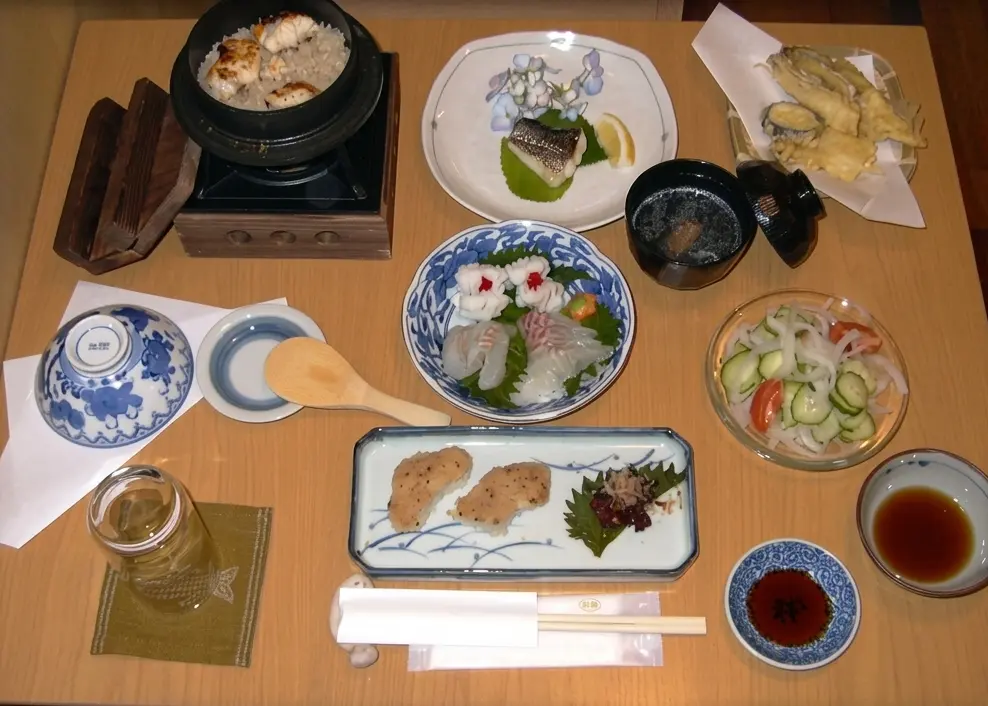
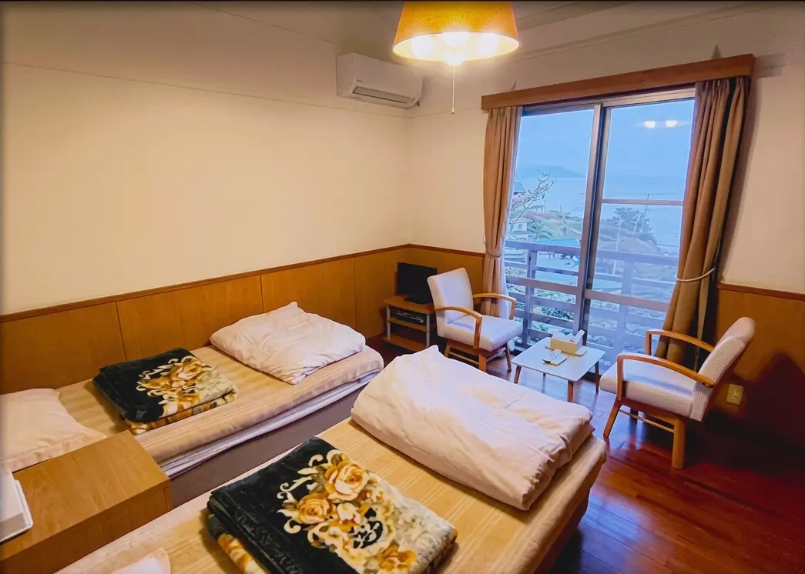
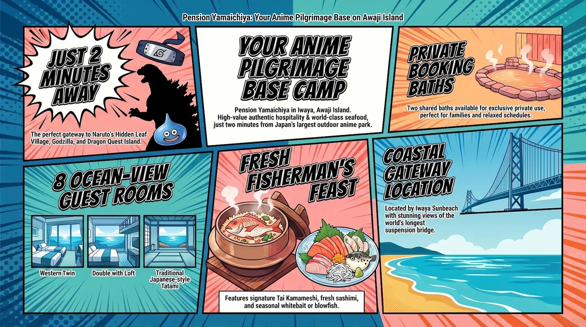
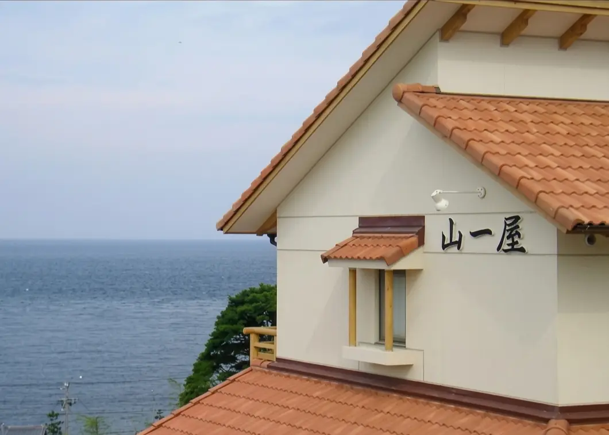
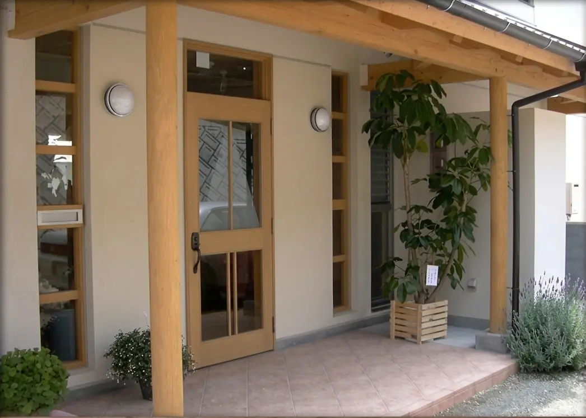
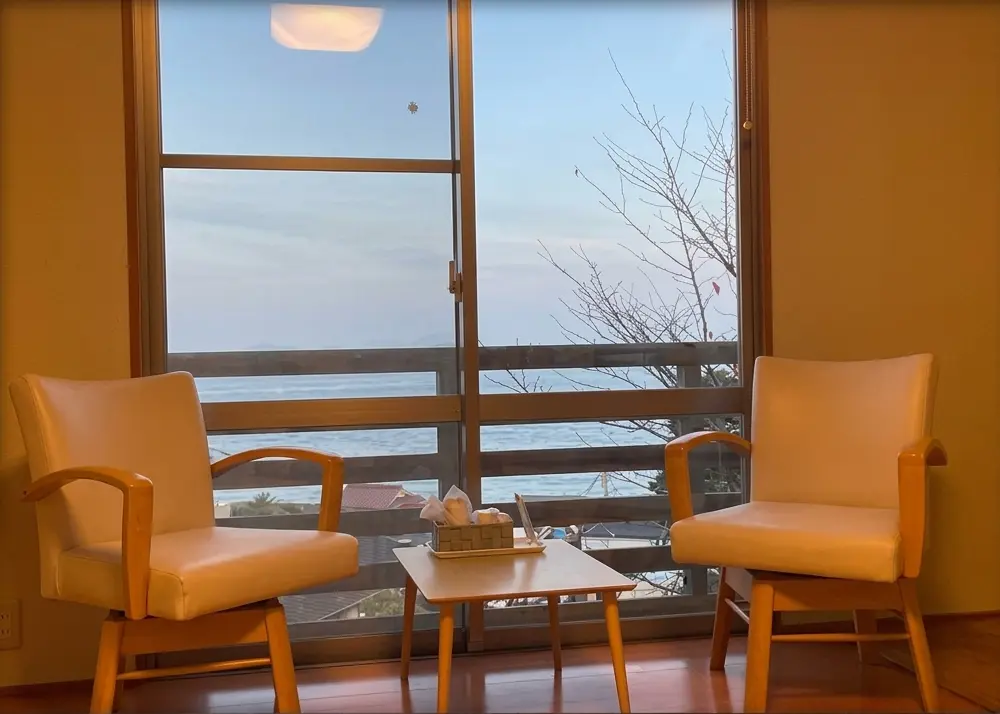
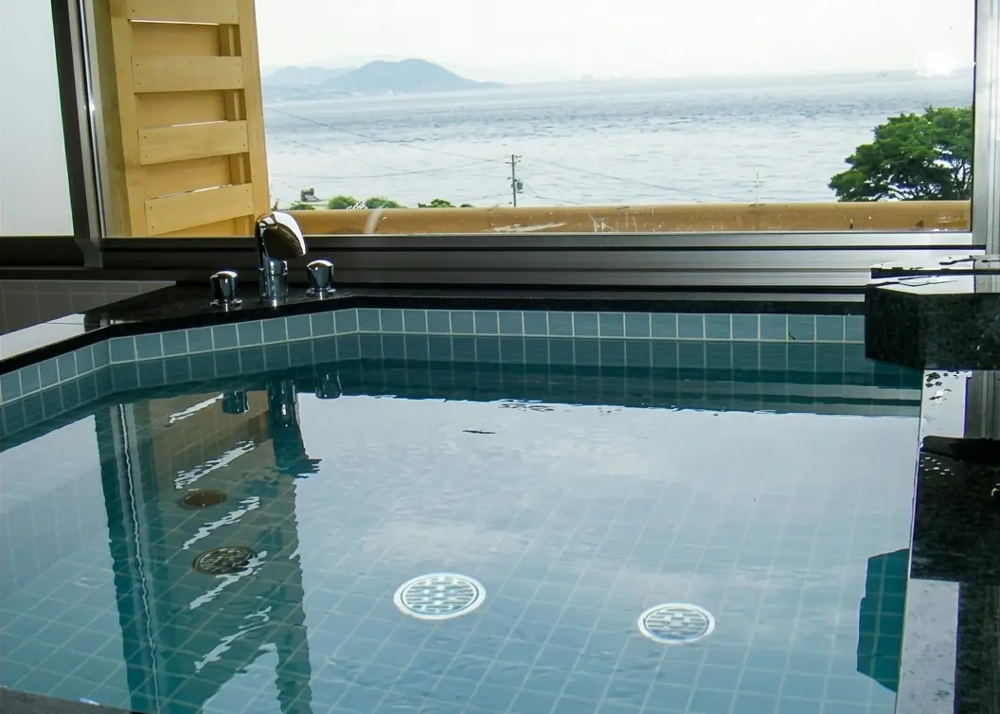
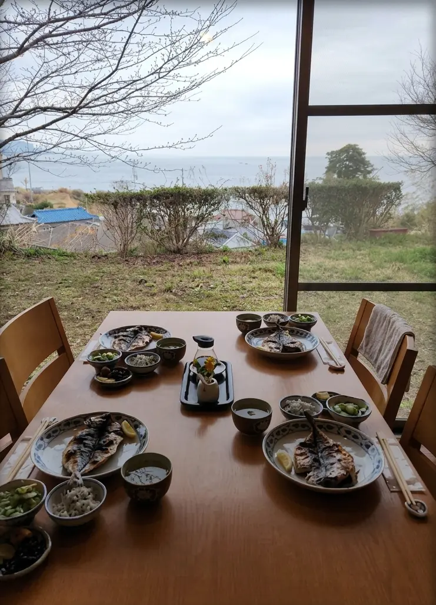
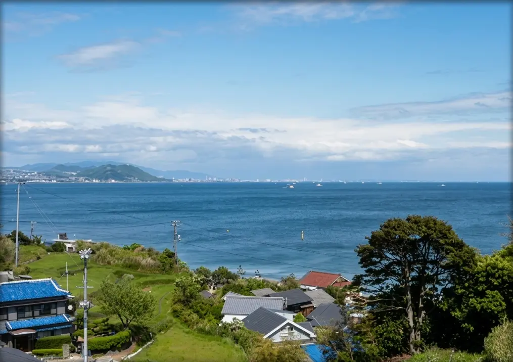

Awaji Island is Japan's mythological birthplace — the first land the gods Izanagi and Izanami created from the heavens — and today it is also the country's single most concentrated destination for anime and manga outdoor experience. In the northern reaches of the island, in the old fishing port district of Iwaya where the Akashi Kaikyo Bridge launches itself toward Kobe, a small family-run pension sits on a hillside overlooking Osaka Bay. Pension Yamaichiya — ペンション 山一屋 — has no character goods in the lobby and no IP collaborations on its walls. What it has is the freshest seafood on the island, a garden where you can grill under the stars, eight ocean-view rooms at prices that make the more obvious anime accommodations look expensive by comparison, and a 2-minute drive to Nijigen no Mori: the sprawling outdoor anime park that houses the official NARUTO & BORUTO Shinobi Village, Godzilla Interception Operation, Crayon Shin-chan Adventure Park, and Dragon Quest Island. The combination — honest Japanese hospitality, home-cooked fish dinner, and Japan's greatest concentration of anime attractions at the door — is not one that any other accommodation in the country quite replicates.
What Pension Yamaichiya Actually Is: The Japanese Pension Format
A pension (ペンション) in Japan is a distinctly specific accommodation category that emerged in the 1970s as a Western-influenced alternative to the traditional ryokan. Where a ryokan operates with formal service, tatami rooms, and multi-course kaiseki dining, a pension functions more like a European guesthouse: owner-operated, typically fewer than fifteen rooms, meals prepared by the family in a shared dining room, an atmosphere that guest reviews across platforms consistently describe using the same word — akogare — a sense of warmth, intimacy, and feeling like a guest in someone's home rather than a customer in a facility. Pension Yamaichiya fits this format precisely. It is run by a husband-and-wife team whose hospitality is cited in virtually every review across Jalan, Rakuten Travel, and Google Maps. The experience is intentionally non-institutional: you are eating what the owner bought at the port that morning, sleeping in a room with a window facing the sea, and borrowing the bath on a private schedule rather than sharing with strangers.

The facility operates with a total of eight rooms across Western twin, Western double-with-loft, and Japanese-style washitsu configurations — all with ocean views toward Osaka Bay. Two shared baths are available for private exclusive use, which means guests can schedule their bathing time without the restriction of a ryokan's gender-separated public rotation. A multi-purpose room with DVD playback and entertainment space is available for evening use. The garden BBQ terrace runs from spring through autumn. On-site parking accommodates approximately eight vehicles. The total character of the place is best captured by one recurring phrase in the Japanese review record: shinseki no ie ni asobi ni kita you na kimochi — "it feels like visiting a relative's house." For international guests arriving after a day at the anime park, that landing is a significant one.
Awaji Island and the Anime Connection: Nijigen no Mori
The relationship between Awaji Island and anime is not a recent marketing invention — it is an infrastructural commitment that the island has built over a decade. In 2013, Pasona Group proposed what was called the "Awaji Manga & Anime Island" project to Hyogo Prefecture, won the bid for development within Hyogo Prefectural Awajishima Park, and began building what became Nijigen no Mori (二次元の森, literally "Two-Dimensional Forest"): an outdoor experiential anime theme park occupying 134.8 hectares of natural forest terrain in the island's northern section, immediately above Iwaya.

The park now contains four major permanent attractions: NARUTO & BORUTO Shinobi Village, a multi-course outdoor adventure that recreates the world of Kishimoto's Hidden Leaf Village with a three-story maze (Tennokan), mission rallies (Chinokan), and the ramen shop Ichiraku; Godzilla Interception Operation, built around a full-scale 120-meter Godzilla model; Crayon Shin-chan Adventure Park; and Dragon Quest Island, an outdoor field RPG. The luxury villa Grand Chariot Hokuto Shichise 135° on the park grounds offers twelve character-themed suites for guests who want to sleep inside the anime world itself. Pension Yamaichiya, sitting two minutes away by car at the base of the same hill in Iwaya, is the alternative answer: sleep in comfort and value, leave the themed immersion to the park itself.
The NARUTO connection to Awaji Island is worth naming directly. The Naruto Whirlpools that gave the manga's protagonist his city name are located at the southern end of Awaji Island on the Tokushima Strait — a different part of the island from Nijigen no Mori. But the park on Awaji Island now hosts what is arguably the most immersive NARUTO physical experience in Japan, with the Shinobi Village designed with direct input from the original production. The spiral motif of the uzumaki — Naruto Uzumaki's clan symbol — appears both in the tidal currents of the south and in the stamp hunts and logo installations of the park in the north. For fans of the series, the island has a coherent NARUTO geography that spans its full length.
Location: Iwaya, the Northern Gateway of Awaji Island
Pension Yamaichiya's address is 2593-2 Iwaya, Awaji City, Hyogo Prefecture — a residential hillside in Iwaya, the first district you reach after crossing the Akashi Kaikyo Bridge from Kobe. The Akashi Kaikyo Bridge, at 3,911 meters, is the world's longest suspension bridge, and its northern anchorage and visitor center are in Iwaya itself. The pension is a 2-minute drive from Awaji IC on the Kobe-Awaji-Naruto Expressway, which means the logistics of arriving and departing from the property are among the simplest on the island. From the room windows and garden, Osaka Bay stretches eastward toward the lit skylines of Kobe and Osaka, with the bridge's cable towers rising to the northwest.
Iwaya is not the most tourist-developed part of Awaji Island — the resort strip and famous sunset views are along the western coast, and the southern tip has the Naruto Strait attractions — but it is the most accessible and the best-positioned for visitors whose primary purpose is Nijigen no Mori. The Iwaya Prefectural Sunbeach (岩屋県民サンビーチ) is a 3-minute walk from the pension. The ferry pier connecting Awaji to Akashi city in Hyogo is a 15-minute walk or short taxi ride, offering an alternative route back to the mainland via a quick sea crossing. Multiple Google Maps reviewers note the proximity to both the park and the beach as defining features of the location's practical convenience.
The Rooms: Eight Ocean-View Rooms, Three Types
Pension Yamaichiya offers eight rooms in three basic configurations: Western twin rooms (approximately 15–17 square meters), a Western double room with a loft, and Japanese-style tatami washitsu. All rooms have ocean views facing Osaka Bay — a consistent point of emphasis in the review record, with multiple guests specifically noting the quality of the morning view from their room window as a highlight of their stay. Standard amenities across all room types include television, individual air conditioning, complimentary toiletries, towels, and yukata robes. Refrigerators are available in rooms. Bathroom configurations vary: some rooms include private bath, while others share the two communal baths that are available for exclusive private booking.
Rooms are described in reviews as clean and well-maintained. The space is modest by resort standards — this is a pension, not a hotel — but reviewers consistently note that ceiling height and window configuration make the rooms feel less compact than their stated size might suggest, with one Jalan reviewer specifically writing that the twin rooms felt larger than a business hotel twin despite similar square footage, attributed to the high ceilings and the visual expansion of the sea view. Noise from the corridor is mentioned in some reviews as a mild consideration — the interior doors are not heavily insulated — but no review in the available record identifies this as a major problem. The ocean view and morning light through the window are the defining spatial feature of the rooms: multiple reviews describe waking to the sea and the bay as the element that made the stay memorable.
General Facilities
Pension Yamaichiya operates two shared baths — one larger and one smaller — both available for exclusive private booking rather than communal use, which is a meaningful distinction from larger shared-bath facilities. The private bath booking system is praised across the review record, with guests noting the ability to bathe at leisure without the scheduling pressure of a public facility. A multi-purpose room equipped with DVD playback, games, and common seating serves as an evening gathering space. The garden BBQ terrace is operational from spring through autumn, with BBQ equipment available for guest use, and several reviews describe the combination of an outdoor grill, ocean air, and the stars over Osaka Bay as the most memorable part of a summer stay. Free parking for approximately eight vehicles is available on-site. Wi-Fi is available throughout the property. The nearest convenience store is within a short drive.
Dining: Seasonal Seafood at the Heart of the Stay
The dinner at Pension Yamaichiya is the reason most guests return. The property markets itself as mikaku no yado — a "taste guesthouse" — and the dining program bears this out: it is built around the seasonal catch from local Awaji Island waters, prepared as a multi-course Japanese dinner by the owner and served in the shared dining room. The standard course includes fresh sashimi — typically featuring white-flesh fish, local octopus (tako), and pike conger (hamo, available seasonally with 3-day advance notice) — alongside tempura, grilled fish, and a closing tai kamameshi (sea bream rice cooked in an iron pot), which multiple reviewers single out as the dish they remember most. One Jalan reviewer summarizes the dinner as "everything using local ingredients from Awaji Island, from octopus and hamo and white-flesh sashimi to grilled fish, tempura, and finally tai kamameshi — all delicious."
Seasonal specialties worth noting: shirasuboshi (live whitebait, available late April through November with advance reservation), and the property's handling of Awaji Island 3-year torafugu blowfish, available with 3-day advance notice. The Awaji Island blowfish — raised for three full years before harvest, longer than the standard practice — has become one of the island's premium culinary identities, and the pension's ability to serve it at its price point represents genuine value. Breakfast runs to Japanese-style service: guests consistently highlight the dried aji horse mackerel — sourced directly from the area — as markedly superior to what can be found at non-local establishments.
The dining room is shared and meals are served at set times, which is the standard pension format. Booking a meal plan (dinner and breakfast included) at time of reservation is strongly recommended, as walk-in dinner availability is not guaranteed. The property's tagline on Awaji Island's official tourism guide lists the live whitebait bowl addition to the seafood course as a signature spring-to-autumn offering: the combination of a live whitebait bowl over rice and the standard seafood course is considered the peak version of the Yamaichiya dinner. BBQ in the garden is available as an alternative or supplement during summer evenings.
Cleanliness
Cleanliness at Pension Yamaichiya scores consistently in the highest tier across domestic booking platforms. On Jalan, where "cleanliness" (清潔感) is rated as a distinct category, the pension's score places it among the top-reviewed properties in the Awaji region. Guest reviews use the word kirei (clean, neat) regularly for the rooms, the baths, and the dining area. Specific praise appears frequently for the bath facilities, which reviewers note are maintained to a standard that belies the modest scale of the property. The owner's personal approach to housekeeping — running the property as a couple with direct responsibility for every room — is cited in multiple reviews as the explanatory factor. The refrigerator in each room with a complimentary bottle of water placed before check-in is a small detail that several reviewers mention as an indicator of the owners' attention to their guests' experience. The building shows its age in some areas — it is not a newly constructed property — but the cleanliness standard is maintained at a level that separates it clearly from neglected older pensions.

Value
Pension Yamaichiya is priced in the budget-to-mid tier of Japanese accommodation — typically ¥12,800–¥18,000 per person per night for the dinner-and-breakfast meal plan, with the starting rate for two adults in a standard twin at around ¥25,600 total as listed on Jalan — which places it substantially below every resort, villa, and luxury anime accommodation on the island while delivering a quality dinner, ocean-view room, private bath access, and a base for Nijigen no Mori that no other property on the island can match at the price point. For anime travelers specifically, the calculation is particularly clear: the character-suite accommodations at Grand Chariot Hokuto Shichise 135° inside Nijigen no Mori itself run at multiples of the Yamaichiya rate; the resort hotels on Awaji Island's western coast command premium pricing for sunset views; and none of them serve a homemade seafood course built around that morning's catch.
The constraint is the format. A pension is not a resort. There is no onsen, no spa, no front desk open around the clock, no restaurant that operates independently of the meal plan schedule. Guests who want a full-service hotel experience should look elsewhere on the island. But for the traveler who plans to spend a full day at Nijigen no Mori and wants to eat well, sleep well, wake to an ocean view, and arrive at the park refreshed the next morning at a total per-night cost that makes the park tickets themselves the largest line item in the budget — Pension Yamaichiya is the answer that no other property on Awaji Island provides.
Practical Information
- Check-in: 15:30 Check-out: 10:00
- Price Range: From ¥12,800 / person per night (dinner & breakfast plan; seasonal variation)
- Rooms: 8 rooms — Western twin, Western double + loft, Japanese tatami (washitsu); all ocean-view facing Osaka Bay
- Baths: 2 shared baths (large and small), available for private exclusive booking — not communal rotation
- Dining: Seasonal seafood dinner course (Japanese-style); breakfast included in meal plans. Seasonal specialties: live whitebait bowl (late April–November, advance reservation), hamo pike conger (3 days advance), 3-year Awaji torafugu blowfish (3 days advance)
- Garden BBQ: Available spring through autumn; advance arrangement recommended
- Common Facilities: Multi-purpose room with DVD player; garden BBQ terrace; free parking (~8 vehicles)
- Nearest Anime Park: Nijigen no Mori (NARUTO & BORUTO Shinobi Village, Godzilla, Crayon Shin-chan, Dragon Quest) — approx. 2 min by car from Awaji IC
- Nearest Beach: Iwaya Prefectural Sunbeach — approx. 3 min walk
- Nearest Ferry: Iwaya Port (Awaji–Akashi ferry) — approx. 15 min walk
- Wi-Fi: Available throughout the property
- Parking: Free on-site (~8 cars)
- Tattoo policy: Private bath booking — no communal bath policy restrictions apply
- Children: Welcome; family-friendly atmosphere
- Pets: Not permitted
Getting There
From Kobe / Sannomiya
- Highway bus: Kobe Sannomiya Terminal → Awaji IC (~45 min)
- Alight at Awaji IC bus stop; pension approx. 15 min walk or short taxi
- Alternatively: bus to Awaji Highway Oasis / Nijigen no Mori entrance
- By car via Akashi Kaikyo Bridge: ~30 min from Kobe city center
From Osaka / Namba / Umeda
- Express bus: Namba or Umeda → Awaji IC (~1h 30–45 min)
- Itami Airport (ITM) → Awaji IC bus: ~1h 45 min
- Kansai International Airport (KIX) → Awaji IC bus: ~3h
- By car via Hanshin Expressway → Kobe-Awaji-Naruto Expressway: ~1h from Osaka
Via Akashi Ferry (from JR Akashi Station)
- JR Akashi Station (Sanyo Line from Kobe or Himeji): short walk to Akashi Port
- Awaji Jenova Line ferry: Akashi Port → Iwaya Port (~13 min crossing)
- Pension: ~15 min walk from Iwaya Port
- Scenic and efficient from Kobe/Himeji area; ferries run frequently
By Car
- Exit at Awaji IC (Kobe-Awaji-Naruto Expressway): ~2 min to pension
- Free on-site parking (~8 vehicles)
- From Osaka: ~1h via expressway
- From Kyoto: ~1h 30 min via expressway
Tips for Getting the Most Out of Your Stay
Book your meal plan — dinner and breakfast — at the time you make your room reservation, not as an afterthought on arrival. The kitchen operates around a fixed dinner service and the owner purchases seafood in specific quantities each day. Leaving the meal plan to chance on arrival, particularly during peak periods, means potentially missing the most important part of what Pension Yamaichiya offers. The seasonal additions — live whitebait bowl, hamo, torafugu — require 3-day advance notice and are worth planning around: the whitebait season runs late April through November, and the Awaji Island torafugu is an experience difficult to replicate outside of the island at this price level.
For Nijigen no Mori, purchase tickets in advance through the official website. The park is large — 134.8 hectares — and each attraction (NARUTO, Godzilla, Crayon Shin-chan, Dragon Quest) operates on separate ticketing. Budget a full day for the park if you plan to cover more than one zone; the NARUTO & BORUTO Shinobi Village alone has three distinct courses (Tennokan maze, Chinokan mission rally, Chinokan Gaiden side story) each requiring separate time. The park's internal tram connects the attractions for 500 yen per unlimited-ride ticket, purchased at Highway Oasis. The NARUTO zone's Ichiraku Ramen — a faithful recreation of the manga's famous ramen shop — is worth booking a table for lunch rather than treating as an afterthought.
The Iwaya ferry to Akashi is an underused route. Taking the 13-minute crossing from Iwaya Port to Akashi city in the morning, spending a few hours at the Akashi Kaikyo Bridge exhibition center (Maiko Marine Promenade, which has a glass-floor walkway across the bridge anchorage on the Kobe side), and returning to the island in the afternoon via car or bus gives a second day's itinerary that requires no expressway driving. From the pension, the ferry pier is a 15-minute walk and runs on a regular schedule.
The garden BBQ works best when arranged at the same time as room booking. In summer, the combination of grilling Awaji Island produce and seafood on the pension's terrace — with Osaka Bay below and the Akashi Bridge cables lit against the sky — is described in the review record as one of those Japan travel moments that photographs can't fully capture. Bring your own drinks; the owners can often arrange some supplies but the pension is not a full-service bar.
Beyond the Anime Park: An Honest Assessment
Pension Yamaichiya is not, by any definition, an anime hotel. There are no character illustrations in the rooms, no collaboration goods at the front desk, no themed amenities. The owners are running a seafood guesthouse that they built their reputation on long before Nijigen no Mori existed or before any international visitor had a reason to come to Iwaya specifically. The pension's identity is the fish: what the Akashi Strait and Osaka Bay produce, caught by the fishing port a short drive down the hill, cleaned, sliced, grilled, and fried by the same couple who will be at the front desk when you check in.
What makes it relevant to HotelManga's coverage is geography and function, not branding. Awaji Island has become, genuinely and substantially, one of the most important anime pilgrimage destinations in Japan — and the pension that sits two minutes from Japan's largest outdoor anime park, charges reasonable prices, earns a 4.9 composite score on Jalan from over 200 reviews, and sends guests home having eaten some of the best fish they've had in Japan, is doing something that the expensive character-room villa inside the park itself cannot do: it is offering the texture of actual Japanese life — a family-run place, a fresh-cooked dinner, an ocean view at dawn — alongside the anime spectacle rather than in place of it. Both readings of Awaji Island are worth having. The pension is the one that makes sure you remember the island as well as the park.
Hotel Directory
Pension Yamaichiya (ペンション 山一屋)
Photo Gallery

Photo 1
Photo 2
Photo 3'">
Photo 4'">
Photo 5'">
Photo 6'">Stay Where the Anime Island Begins
Rooms fill fast during peak anime park season — book the meal plan together with your room.
Visit Official Website →